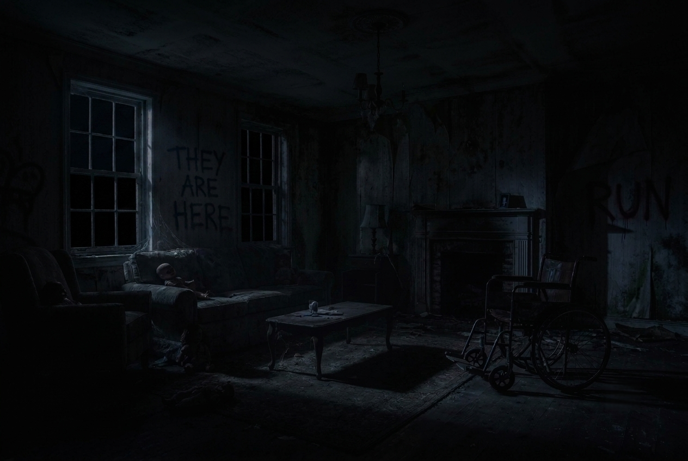

Éditeur : Romain TANG
Œuvre : Scary Game
Contact : tangromain@yahoo.com
Scary Game ne collecte aucune donnée personnelle. Aucun cookie n'est déposé, aucune information n'est transmise à des tiers. Le jeu fonctionne entièrement dans votre navigateur sans connexion à un serveur externe.
L'ensemble des contenus de Scary Game (code, images, sons, textes) sont la propriété exclusive de Romain TANG et sont protégés par le droit d'auteur. Toute reproduction sans autorisation est interdite.
Images : Générées par intelligence artificielle via Google Imagen. Ces images sont utilisées à des fins non commerciales dans le cadre de ce projet.
Sons & Musiques : Issus d'une banque de sons gratuits et libres de droits. Utilisés conformément aux licences associées.